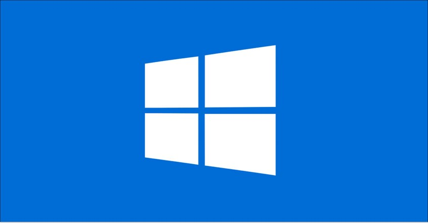
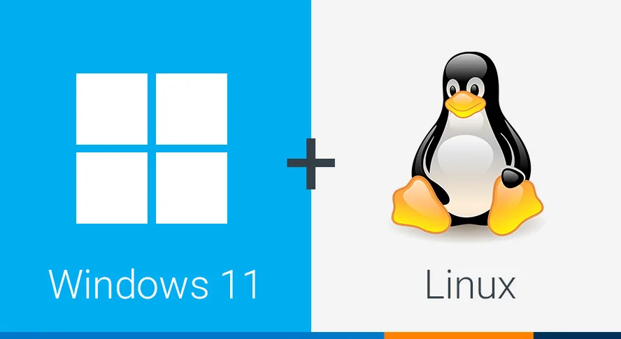

Konfigurasi ip address
Install linux seperti kali linux, cachyos, debian, arch
Istall atau install ulang windows 11 dan windows 10
Membuat website sederhana
Mengkonfigurasi ssd degan gparted

Konfigurasi IP Address: Mengonfigurasi IP address dan pengaturan jaringan dasar untuk konektivitas perangkat.
Instalasi Linux: Melakukan instalasi dan setup berbagai distro Linux (Debian, Kali Linux, Arch, dan CachyOS).
Instalasi Windows: Melakukan instalasi baru maupun instalasi ulang Windows 10 dan Windows 11.
Pembuatan Website: Membangun dan merancang website sederhana yang fungsional dan responsif.
Manajemen SSD (GParted): Mengonfigurasi dan mengelola partisi SSD secara aman menggunakan GParted.
badminton